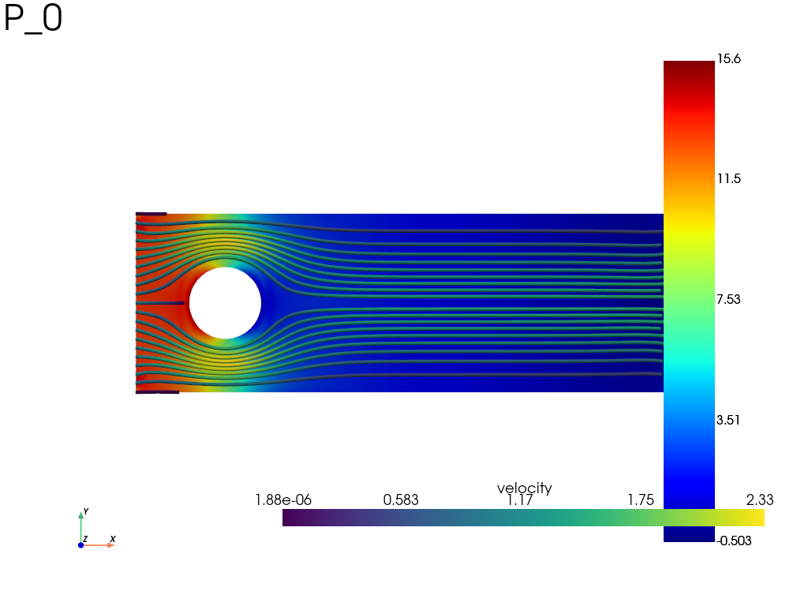

Note
Go to the end to download the full example code.
Stokes flow around a cylinder with a user-defined weak form
Steady incompressible Stokes flow in a channel around a circular obstacle,
written directly with the differential operators of a
fedoo.ModelingSpace and a fedoo.WeakForm. The mixed
velocity/pressure problem is discretized with the stable p1+/p1 element
(linear triangle enriched by a bubble for the velocity, linear pressure) built
with fedoo.lib_elements.CombinedElement.
With \(\boldsymbol{\sigma} = -p\,\mathbf{I} + 2\mu\,\mathbf{D}(\mathbf{v})\), the weak form reads
In Voigt notation, with the engineering shear strain rate \(\gamma_{xy} = v_{x,y} + v_{y,x} = 2 D_{xy}\), the viscous term is
import fedoo as fd
import numpy as np
Variables and weak form
space = fd.ModelingSpace("2D")
space.new_variable("Vx")
space.new_variable("Vy")
space.new_vector("V", ["Vx", "Vy"])
space.new_variable("P") # pressure
# create simple DiffOp objects
dVx_dX = space.derivative("Vx", "X")
dVy_dY = space.derivative("Vy", "Y")
dVy_dX = space.derivative("Vy", "X")
dVx_dY = space.derivative("Vx", "Y")
P = space.variable("P")
mu = 10 # dynamic viscosity
L1 = 100
L2 = 200
R = L1 / 5
Vleft = 1
# strain rate in Voigt notation: D_xx, D_yy, gamma_xy = 2 D_xy
D = [dVx_dX, dVy_dY, dVx_dY + dVy_dX]
# Momentum conservation equation
eq1 = (
D[0].virtual * (-P + 2 * mu * D[0])
+ D[1].virtual * (-P + 2 * mu * D[1])
+ mu * D[2].virtual * D[2]
)
# Mass conservation equation
eq2 = P.virtual * (dVx_dX + dVy_dY)
# weakform
wf = fd.WeakForm(eq1 + eq2)
# Or by summing the weakforms
# wf1 = fd.WeakForm(eq1)
# wf2 = fd.WeakForm(eq2)
# wf = wf1 + wf2
Mesh and mixed element
One internal (bubble) node is added to each triangle. The velocity uses the
tri3bubble interpolation; the pressure keeps the tri3 one, so the
pressure dof of the bubble nodes is unused and is set to zero below.
mesh1 = fd.mesh.hole_plate_mesh(
length=L1, height=L1, radius=R, elm_type="tri3", sym=False
)
mesh2 = fd.mesh.rectangle_mesh(
nx=41,
ny=21,
x_min=L1 / 2,
x_max=L1 / 2 + L2,
y_min=-L1 / 2,
y_max=L1 / 2,
elm_type="tri3",
)
mesh = fd.Mesh.stack(mesh1, mesh2)
mesh.merge_nodes(mesh.find_coincident_nodes())
# nodes of the cylinder (found before the bubble nodes are added)
hole = mesh.find_nodes("Point", np.array([0, 0]), R + 1e-6)
internal_nodes = mesh.add_internal_nodes(1)
elm_type = "p1+/p1"
new_elm = fd.lib_elements.CombinedElement(elm_type, "tri3")
new_elm.set_variable_interpolation("Vx", "tri3bubble")
new_elm.set_variable_interpolation("Vy", "tri3bubble")
fd.Assembly.create(wf, mesh, elm_type=elm_type, name="assembling")
<fedoo.core.assembly.Assembly object at 0x7fa62e8af790>
Boundary conditions and solve
Uniform horizontal inflow velocity \(v_x = 1\) on the left edge (the vertical velocity is left free there), no-slip on the walls and on the cylinder, and a natural (traction-free) outflow on the right, which also fixes the pressure level.
The two left corners belong both to the inflow edge and to a wall: they are
removed from the inflow nodes so that they keep the no-slip value (two
Dirichlet conditions with different values on the same dof would emit a
BoundaryConditionWarning, the last one added prevailing).
pb = fd.problem.Linear("assembling")
left = mesh.find_nodes("X", mesh.bounding_box.xmin)
right = mesh.find_nodes("X", mesh.bounding_box.xmax)
bottom = mesh.find_nodes("Y", mesh.bounding_box.ymin)
top = mesh.find_nodes("Y", mesh.bounding_box.ymax)
inflow = np.setdiff1d(left, np.hstack((bottom, top))) # left edge without corners
pb.bc.add("Dirichlet", inflow, "Vx", Vleft)
pb.bc.add("Dirichlet", bottom, "V", 0)
pb.bc.add("Dirichlet", top, "V", 0)
pb.bc.add("Dirichlet", hole, "V", 0) # no-slip on the cylinder
pb.bc.add("Dirichlet", internal_nodes, "P", 0) # unused pressure dof of the bubbles
pb.apply_boundary_conditions()
pb.solve()
Pressure field and streamlines
Streamlines are not part of the fedoo plot function: they are added with
PyVista on the plotted mesh (res.meshplot).
res = pb.get_results("assembling", ["V", "P"])
pl = res.plot("P", component=0, show_edges=False, show=False)
# Add a zero out-of-plane component for PyVista's 3D streamline filter.
res.meshplot["velocity"] = np.c_[
res["V"].T,
np.zeros(mesh.n_nodes),
]
line_streamlines = res.meshplot.streamlines(
"velocity",
pointa=(-L1 / 2 + 1e-5, -L1 / 2 + 1e-5, 0),
pointb=(-L1 / 2 + 1e-5, L1 / 2 - 1e-5, 0),
n_points=20,
max_length=1000.0,
)
pl.add_mesh(line_streamlines.tube(radius=L1 / 100))
pl.show()

Total running time of the script: (0 minutes 0.405 seconds)